▲ 조문국사적지 일대를 높은 곳에서 본 모습. 촬영 시기는 확인하지 못했다. 사진=한국관광공사
"고운사가 불탔다는데, 지금 가도 되나?" 2025년 3월 경북 대형 산불로 의성 고운사의 가운루와 연수전이 불에 탔고, 지금은 복구 설계 단계다. 반면 의성 금성면에는 조문국 시대 고분 374기가 분포한다고 소개되는 조문국사적지와 박물관이 있다. 이 글은 의성군·한국관광공사 TourAPI·고운사·언론 보도에서 확인한 값만 정리했다. 고운사 현황은 2026년 10월 8일 기준 가장 최근 확인 자료(2026년 9월 16일 보도)까지다. 확인하지 못한 값은 "확인하지 못했다"로 적었다.
💡 먼저 결론
조문국박물관은 09:00~18:00(입장 마감 17:00), 월요일 휴관, 무료, 조문국사적지는 상시 개방·연중무휴·주차 가능이다. 고운사는 TourAPI에 상시 개방·주차 가능으로 올라 있지만(정보 수정일 2026년 10월 7일), 산불로 전각이 소실돼 복구 공사 착수 전 상태이며 7월 폭우로 진입로와 숲길이 상했다. 숲길 구간별 통행 가능 여부는 공식 안내를 확인하지 못했으니 출발 전 전화로 확인하자. 조문국박물관 바로가기
1. 한눈에 보기 — 확인된 것과 확인하지 못한 것
의성 여행은 금성면 한곳에 모인 조문국 유적과 단촌면 고운사가 방향이 갈린다. 조문국박물관 좌표를 기준으로 TourAPI 좌표를 이용해 직접 계산한 직선거리는 조문국사적지 약 0.6km, 제오리 공룡발자국 산지 약 2.6km, 탑리리 오층석탑 약 2.8km, 고운사 약 21.5km다. 직선이라 실제 도로 거리와 소요 시간은 확인하지 못했다.
| 항목 | 확인된 값 | 출처·상태 |
|---|---|---|
| 조문국박물관 | 09:00~18:00(입장 마감 17:00), 월요일 휴관, 무료 | 의성군 박물관 누리집·TourAPI |
| 조문국사적지 | 상시 개방, 연중무휴, 주차 가능 | TourAPI(수정일 2025-10-23) |
| 고운사 | 상시 개방, 주차 가능, 문의 054-833-2324 | TourAPI(수정일 2026-10-07) |
| 고운사 입장료 | 무료 | TourAPI 이용 정보(2026-10-07 수정본 기준, 고운사 누리집에는 요금 안내 없음) |
| 고운사 주차요금 | - | 확인하지 못했다 |
| 고운사 숲길 통행 구간 | - | 2026년 7월 폭우 이후 구간별 개방 안내를 확인하지 못했다 |
| 박물관·사적지 주차요금 | - | 확인하지 못했다 |
| 식당 영업시간 | - | 확인하지 못했다 |
▲ 조문국사적지 일대를 높은 곳에서 본 모습. 촬영 시기는 확인하지 못했다. 사진=한국관광공사
2. 의성조문국박물관 — 고분 출토 유물을 먼저 보는 곳
TourAPI 소개에 따르면 의성조문국박물관은 지하 1층·지상 3층 규모로, 상설 전시장·기획 전시실·수장고·강당·세미나실·야외 공연장 등으로 구성되고 주로 고분에서 출토된 고대 유물을 소장한다. 주소는 금성면 초전1길 83이다. 의성군 박물관 누리집에는 본관(1~3층), 민속유물 전시관, 고분 전시관, 상상놀이터와 야외 시설이 안내돼 있다.
| 항목 | 내용 | 확인 상태 |
|---|---|---|
| 위치 | 경북 의성군 금성면 초전1길 83 | TourAPI(수정일 2026-03-05) |
| 관람 시간 | 09:00~18:00, 입장 마감 17:00 | 박물관 누리집·TourAPI 일치(누리집은 마감 시각 미기재) |
| 휴관일 | 매주 월요일(공휴일이면 다음 평일), 1월 1일, 설·추석 당일, 군수가 정하는 날 | 박물관 누리집·TourAPI 일치 |
| 관람료 | 무료 | TourAPI(박물관 누리집에는 요금 기재 없음) |
| 주차 | - | 확인하지 못했다 |
| 기획전시 | "의성 명품 12선 - 땅의 기억을 간직한 빛" 2026년 5월 20일~11월 1일, 본관 3층 | 박물관 누리집 |
| 문의 | 054-830-6915, 054-830-6909 | 박물관 누리집 |
10월 남은 월요일인 12일·19일·26일은 정기 휴관일이다. 박물관 누리집 공지에는 본관·고분 전시관의 휴관이나 공사 안내가 없었다(확인일 2026년 10월 8일). 기획전은 11월 1일까지다.
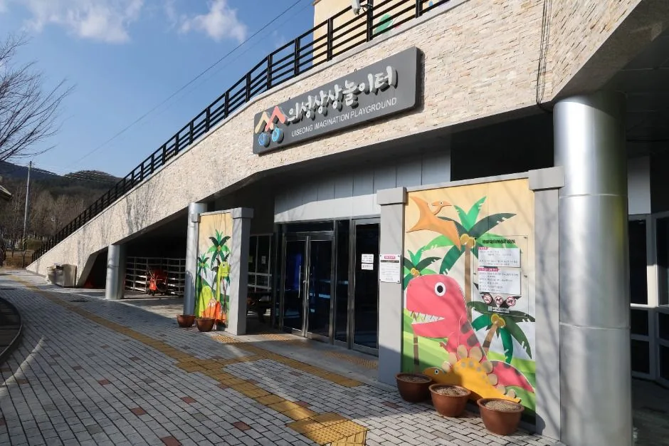
▲ 의성조문국박물관 입구. 촬영 시점은 확인하지 못했다. 사진=한국관광공사
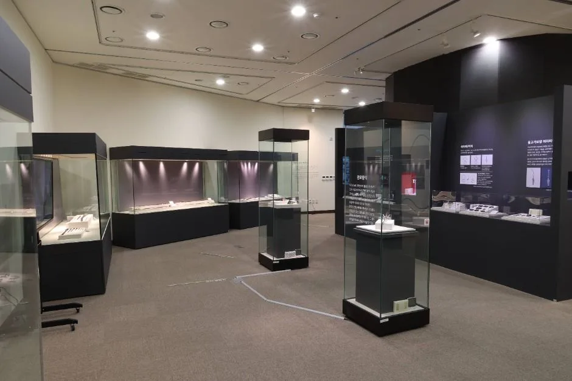
▲ 박물관 전시실의 진열장. 사진=한국관광공사
3. 조문국사적지와 금성산 고분군 — 상시 개방 고분 산책
TourAPI 설명에 따르면 금성산 고분군은 대리리·탑리리·학미리에 걸쳐 한 능선에 이어진 대규모 고분군이며 4세기 후반~6세기 중반에 조성된 것으로 본다. 조문국사적지 소개에는 고분 약 374기가 분포하고 금동관·금동장식·은제관식 등이 출토됐다고 나온다. 같은 TourAPI의 다른 항목(금성면 고분군)은 200여 기라고 적어 자료마다 숫자가 다르다. 기수는 집계 범위에 따라 다를 수 있어 이 글은 두 표기를 모두 소개한다.
조문국은 삼한 시대 부족국가로 현재의 금성면 일대를 도읍지로 하다가 185년(신라 벌휴왕 2년) 신라에 병합됐다고 전하며, 실재를 알려주는 기록은 삼국사기에 짧게 나올 뿐이라고 TourAPI는 설명한다. 사적지에는 조문국 경덕왕릉으로 추정되는 무덤(둘레 74m, 높이 8m)과 대리리 2호분 내부를 재현한 고분 전시관이 있다. 고분군 안에는 작약 단지(4,800㎡)와 계절별 꽃단지를 조성했다고 한다. 작약은 5월 중순부터 피므로 10월 방문 때는 꽃 단지의 현재 상태를 확인하지 못했다.
| 지점 | 개방·휴무 | 주차 | 메모 |
|---|---|---|---|
| 조문국사적지(대리리 일원) | 상시 개방, 연중무휴 | 가능 | 문의 054-830-6915 |
| 의성 금성면 고분군 | 상시 개방, 연중무휴 | 가능 | 문의 054-830-6915, 054-830-6090 |
| 의성 경덕왕릉(대리리) | 상시 개방, 연중무휴 | 가능 | 의성군 관광문화과 054-830-6093 |
| 고분 전시관 | 관람시간·휴관일을 별도로 확인하지 못했다 | - | 박물관 누리집에 시설로 안내 |
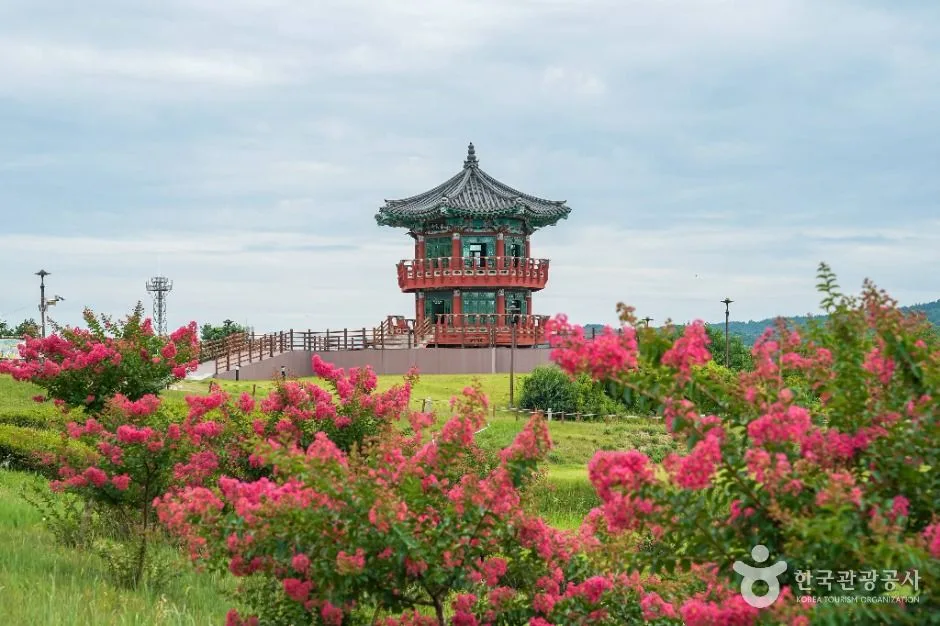
▲ 사적지의 정자와 꽃나무. 꽃이 핀 시기의 사진이며 현재 모습과 다를 수 있다. 원본 이미지에 경상북도청 공식블로그 표기가 있다. 사진=한국관광공사
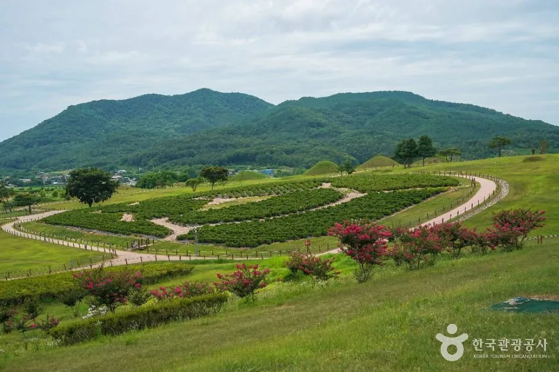
▲ 고분 사이로 조성된 정원 구획과 멀리 보이는 산. 사진=한국관광공사
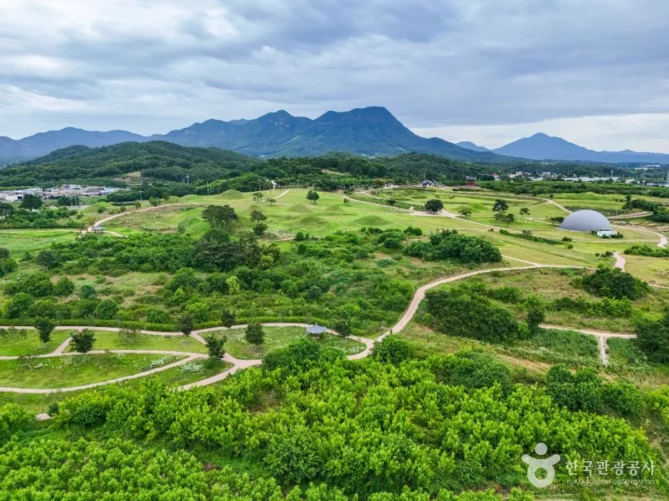
▲ 고분군 사이로 난 산책로. 사진=한국관광공사
4. 고운사 — 산불 이후 현황, 있는 그대로
고운사는 681년 의상대사가 창건한 사찰로 알려져 있고, 이후 고운 최치원이 가운루와 우화루를 지었다고 TourAPI는 소개한다. 2025년 3월 경북 산불로 경내 여러 전각이 불에 탔다. 서울신문(2025년 3월 26일)은 국가유산청과 국립문화유산연구원의 발표를 인용해 전체 건물 30동 중 9동만 양호하고 보물인 연수전과 가운루 등 나머지는 전소된 것으로 파악된다고 보도했다(연수전은 2020년 보물 지정). 머니투데이(2025년 10월 8일)는 가운루와 연수전이 무너졌다고 전하며, 주지 스님이 법당·화장실·공양간은 소실되지 않았다고 말했다고 전했다. 경북매일(2026년 3월 22일)은 종무실장이 승려들의 생활 공간조차 없다고 말했다고 보도했다. 위 30동·9동은 산불 직후(2025년 3월) 파악치이며, 이후 확정 집계는 확인하지 못했다.
| 시점 | 내용 | 출처 |
|---|---|---|
| 2025년 3월 | 경북 산불로 가운루·연수전 등 전각 소실 | 머니투데이 2025-10-08 |
| 2025년 8월 | 사찰림을 인공 복원 대신 자연 복원하기로 사찰·환경단체가 사업 착수 | 머니투데이 2025-10-08 |
| 2025년 9월 말 | 의성군 "고운사 복구 기본계획 용역" 사전규격 공개 | 머니투데이 2025-10-08 |
| 2026년 3월 18일 | 의성군, 건물 주변과 방문객 통행로 등 2차 피해 우려 구역의 위험목 제거 사업 추진 발표 | heraldk.com 2026-03-17 |
| 2026년 7월 19일 | 폭우로 진입로 약 70m 유실, 단전·단수(이후 복구). 진입로는 응급 복구돼 통행 가능, 대웅전으로 가는 숲길 1.1km 구간 훼손 | 연합뉴스(서플 전재) 2026-07-21 |
| 2026년 9월 14일 | 고운사에서 복구 기본계획 중간보고회 | 대구신문 2026-09-16 |
| 2026년 11월 | 극락전·가운루 등 주요 건물 정밀발굴조사 예정 | 대구신문·경북일보 2026-09-16 |
| 2027년 3월~5월 | 설계 승인(3월), 공사 발주(4월), 가운루·극락전 공사 시작(5월) 계획 | 경북일보 2026-09-16 |
| 2030년 | 전체 복구공사 마무리 목표 | 경북일보 2026-09-16 |
복구 사업비는 경북일보 기준 332억 1,400만 원이다. 국가유산청 사업 188억 8,100만 원(국비 70%, 도비·군비 각 15%)과 문화체육관광부 사업 143억 3,300만 원(국비 50%, 도비·군비 각 25%)을 합한 값이다. 첫 복원 대상은 가운루와 극락전이며, 나머지 건물은 세부 일정이 정해지지 않았다. 2025년 10월 머니투데이는 복원이 짧게 잡아도 5년 이상 걸릴 전망이라고 보도했지만, 2026년 9월 의성군 계획은 2030년 완료 목표라 앞으로 일정이 바뀔 수 있다.
✅ 고운사 방문 전 확인
· TourAPI: 상시 개방·주차 가능, 문의 054-833-2324(템플스테이·사찰음식체험 안내가 함께 실려 있으나 산불 이후 운영 여부는 확인하지 못했다)
· 2026년 7월 폭우 이후 숲길 구간별 개방 여부는 공식 자료에서 확인하지 못했다
· 복구 사업이 진행되는 곳이니 공사·조사 구역은 출입하지 말고 안내를 따르자
· 입장료는 TourAPI에 무료로 올라 있고 주차요금은 확인하지 못했다. 템플스테이 예약 문의로 054-833-6934가 TourAPI에 있으나 산불 이후 운영 여부는 확인하지 못했다. 고운사 누리집 바로가기
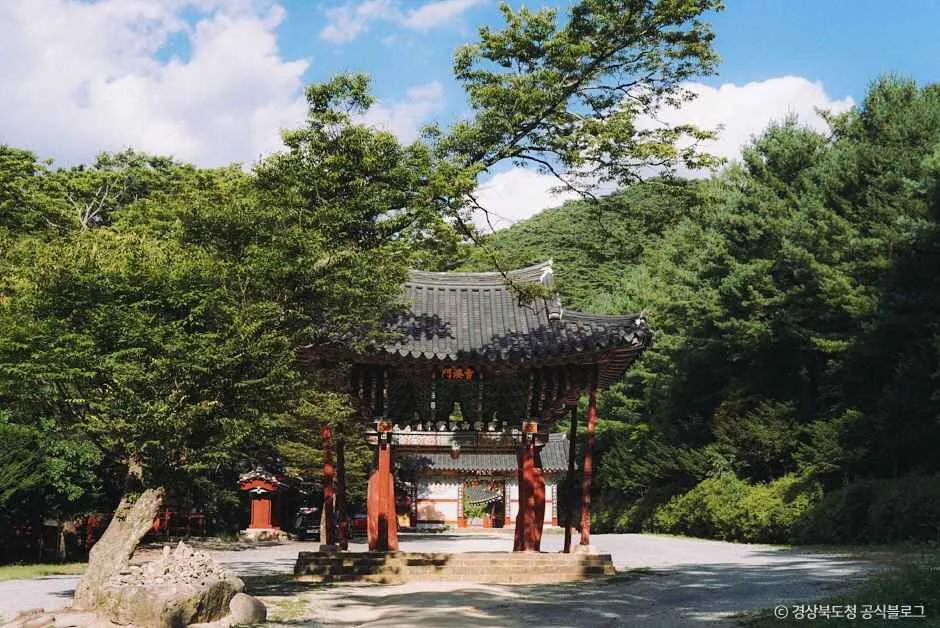
▲ 고운사 경내. 산불 이전 촬영본일 수 있고 촬영 시점은 확인하지 못했다. 현재 모습과 다를 수 있다. 사진=한국관광공사
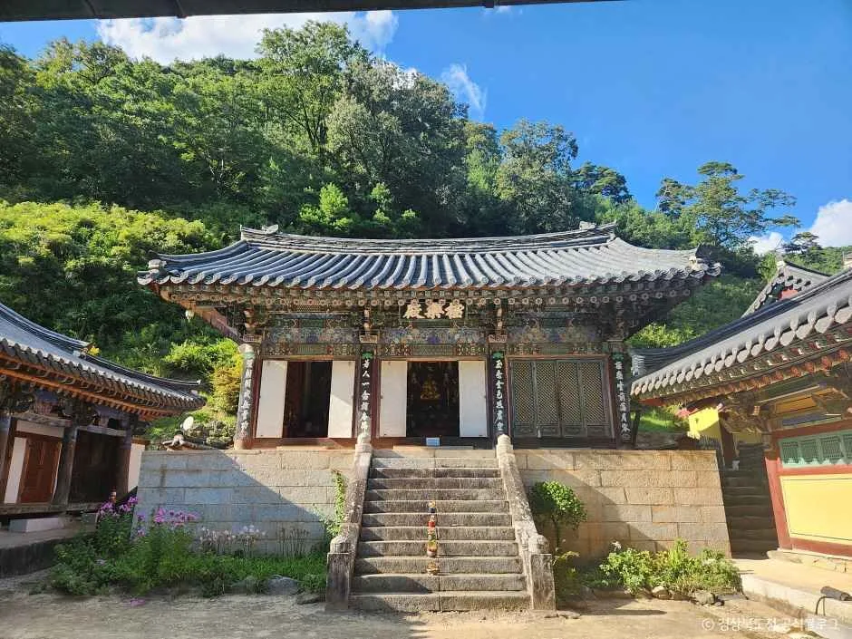
▲ 고운사의 전각. 촬영 시점을 알 수 없어 산불 이전 모습일 수 있다. 원본 이미지에 경상북도청 공식블로그 표기가 있다. 사진=한국관광공사
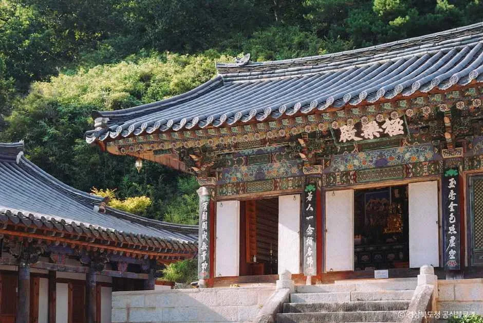
▲ 고운사 전각의 정면. 현재 보존 상태는 이 사진으로 확인할 수 없다. 사진=한국관광공사
5. 금성면에서 함께 볼 곳 — 오층석탑과 공룡발자국
한국관광공사 의성 역사여행 코스 소개는 조문국과 소문국 역사, 제오리 공룡발자국 화석 산지, 국보 탑리 오층석탑을 함께 꼽는다. 두 곳 모두 박물관에서 직선 3km 안쪽이다.
| 지점 | 확인된 정보 | 개방·주차 |
|---|---|---|
| 의성 탑리리 오층석탑(금성면 오층석탑길 5-3) | 통일신라 시대 석탑. 돌을 벽돌 모양으로 다듬어 쌓은 전탑 양식과 목조건축 수법을 함께 보이며, 1층 몸돌에 불상 모시는 감실이 있다(TourAPI) | 상시 개방, 연중무휴, 주차 가능. 문의 054-830-6097 |
| 의성 제오리 공룡발자국 화석산지(금성면 제오리) | 1989년 도로 확장공사 중 발견, 중생대 백악기 중기 퇴적층. 공룡 관련 천연기념물로는 국내 최초 지정. 4개 층준에서 300개 이상 관찰(TourAPI) | 상시 개방, 연중무휴, 주차 불가(TourAPI). 문의 054-830-6097 |
제오리는 TourAPI에 주차가 불가능으로 올라 있다. 도로 확장공사 중 발견된 산지라 도로와 가깝다는 점까지만 알 수 있고, 인근 주차 가능 장소는 확인하지 못했다. 방문하려면 근처 다른 지점에 세우고 걸어갈 수 있는지 군청 관광문화과(054-830-6097)에 먼저 묻자.
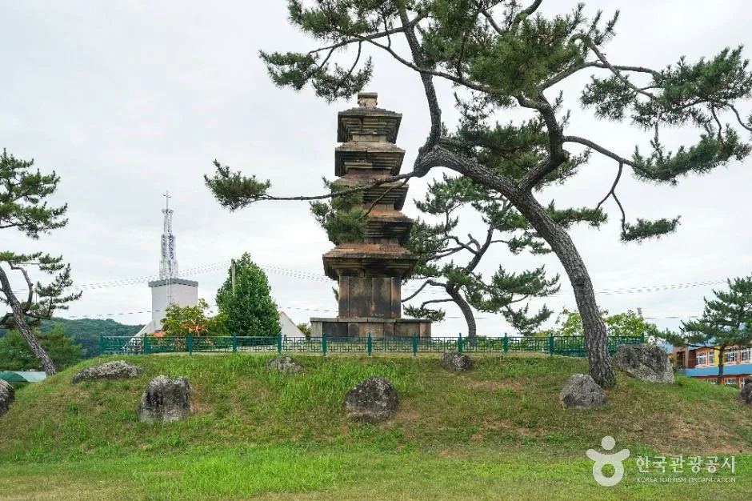
▲ 탑리리 오층석탑. 촬영 시점은 확인하지 못했다. 사진=한국관광공사
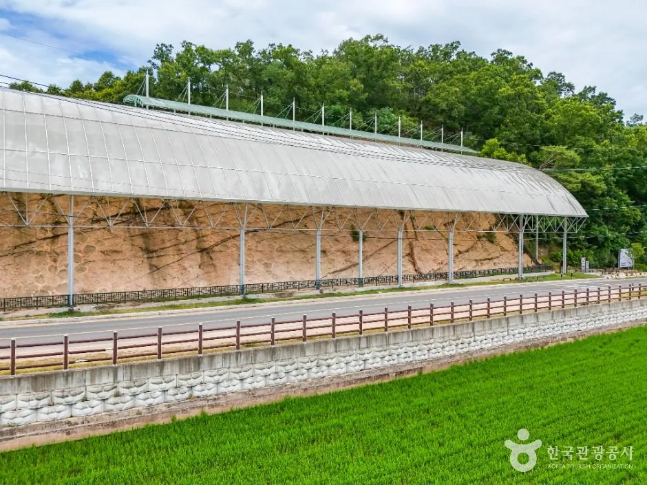
▲ 제오리 공룡발자국 화석산지의 보호 시설. 발자국 자체는 이 사진에서 구분하기 어렵다. 사진=한국관광공사
6. 추천 동선 — 금성면 반나절 + 고운사 별도
공식 정보로 확인되는 순서만 제시한다. 이동 시간은 확인하지 못했고, 직선거리만 아래 도표에 표시했다.
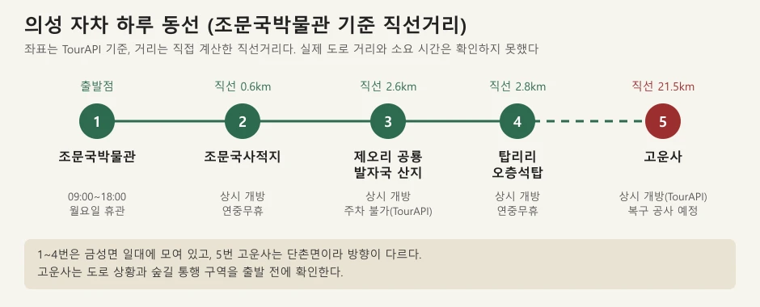
▲ 직접 만든 개념도. 직선거리 기준이며 실제 도로 거리와 소요 시간은 확인하지 못했다. 출처: 한국관광공사 TourAPI 좌표
| 순서 | 장소 | 이유 | 주의 |
|---|---|---|---|
| 1 | 조문국박물관 | 09:00 개관, 출토 유물을 먼저 보면 사적지 이해가 쉽다 | 월요일 휴관, 입장 마감 17:00 |
| 2 | 조문국사적지·경덕왕릉·고분 전시관 | 박물관과 직선 약 0.6km, 상시 개방 | 고분 전시관 시간은 미확인 |
| 3 | 탑리리 오층석탑 | 직선 약 2.8km, 상시 개방 | - |
| 4 | 제오리 공룡발자국 화석산지 | 직선 약 2.6km | 주차 불가, 인근 주차는 미확인 |
| 5 | 고운사(별도 일정) | 직선 약 21.5km, 단촌면 | 숲길 통행 구간·주차요금 미확인, 출발 전 전화 확인 |
고운사는 박물관에서 직선으로 21.5km 떨어져 방향이 다르므로, 금성면을 먼저 돌고 고운사를 별도로 잡거나 반대로 해야 한다. 고운사 관람 시간은 TourAPI에 상시 개방으로만 있고 세부 시간표는 확인하지 못했다. 숲길과 공사 현장이 있는 곳이므로 해가 있는 시간에 방문하는 편이 안전하다는 것은 이 글의 제안이며 공식 안내가 아니다.
7. 식사·특산 — 공식 자료로 확인된 범위
의성군 관광 누리집에는 먹거리 안내 메뉴가 있으나 세부 내용은 열람하지 못했다. TourAPI 음식점 정보로는 조문국박물관 반경 5km 안에서 논산손칼국수(금성면 탑리1길 47-1, 직선 약 2.9km)가 검색됐다. 영업시간·휴무·가격은 확인하지 못했다. 의성 마늘·사과 등 특산물은 공식 관광 정보에서 구체적인 판매처와 시기를 확인하지 못해 적지 않는다. 의성군 관광 누리집 바로가기
8. 출발 전 주의 — 계절과 산불 이후 안전
- 가을 산불조심기간: 입산통제나 숲길 폐쇄는 시기별로 달라진다. 날짜는 입산통제 날짜 정리 기사에서 확인하자.
- 고운사 숲길: 폭우 피해 구간이 있어 의성군 공지가 올라오는지 확인하고, 안내 표지나 통제선 안으로 들어가지 않는다.
- 박물관: 월요일 휴관(10월 12·19·26일), 입장 마감 17:00. 기획전은 11월 1일까지.
- 꽃 단지: 작약은 5월 중순이 철이라 10월에는 해당 없음. 현재 꽃밭 상태는 확인하지 못했다.
9. 같이 보면 좋은 카프리즘 기사
의성과 맞닿은 안동·청송·군위와 같은 경북 북부 코스를 이어 가려면 아래 기사를 참고하자.
- 안동 병산서원 만대루에서 낙동강 보는 법
- 안동 하회마을 주차장·셔틀 안내
- 안동 월영교 야경·분수 정리
- 제20회 청송사과축제 일정·주차
- 군위 사유원과 화본역 하루 코스
- 영주 부석사·소수서원 요금 정리
✅ 출발 전 체크리스트
· 조문국박물관 09:00~18:00(마감 17:00), 월요일 휴관, 무료, 054-830-6915
· 조문국사적지·탑리 오층석탑·제오리 상시 개방, 제오리는 주차 불가(TourAPI)
· 고운사 상시 개방(TourAPI), 문의 054-833-2324, 복구 공사 착수는 2027년 5월 계획
· 숲길 통행 구간·주차요금은 확인하지 못했다(고운사 입장료는 TourAPI상 무료)
10. 정리
의성은 금성면의 조문국 유적(박물관·사적지·오층석탑·공룡발자국)과 산불 피해를 복구 중인 고운사로 나눠 보면 된다. 조문국박물관은 09:00~18:00에 월요일 휴관·무료이고, 사적지 일대는 상시 개방이다.
고운사는 TourAPI상 상시 개방이지만 가운루·연수전이 소실됐고 332억 1,400만 원 규모 복구 사업이 2027년 5월 착공, 2030년 완료를 목표로 한다. 7월 폭우로 숲길 1.1km 구간이 훼손돼 통행 가능 구간은 출발 전 확인이 필요하다. 주차요금·식당 정보는 확인하지 못했다(입장료는 TourAPI상 무료).